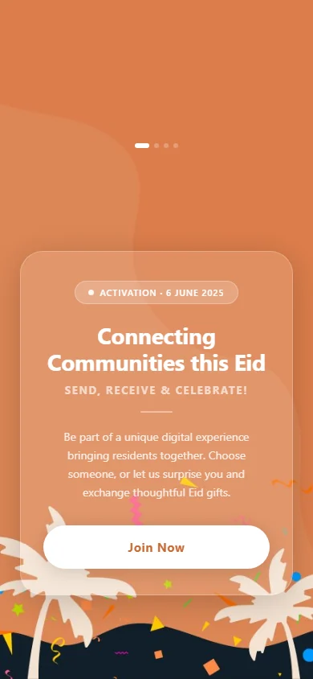

Choose the community
The prototype begins by establishing the community context for the allocation.
Selection and allocation in one prototype flow.
Explore the story
Organize a gift journey from community context to an individual choice.
Named functions separate navigation, community selection, household filtering and gift selection. A random-assignment action introduces an event-allocation branch within the prototype.
The prototype begins by establishing the community context for the allocation.
Villa and family choices form separate filtering stages.
The final gift choice sits alongside a random-assignment option in the documented interface structure.
Explore the complete compositions and interface states. Select any image for a closer look.
Portrait Eid gift-exchange landing page with an orange festive background, welcome message and join button.
Structure, interaction and visual decisions that give the work its character.
RoleConfirm flow design, selection/filter controls, assignment logic and any template or AI-assisted implementation.
AssetsCredit supplied identity and scaffolding separately. No real resident information, operational allocation result or production-service claim is included. Supplied identity, background illustration, event copy and web scaffolding require separate credits. The isolated header identity is hidden in the private derivative. The date and event wording are source copy, not confirmation of a delivered event.
StatusPrivate static-source study; application behavior, deployment and delivery remain untested.